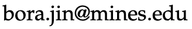

Bora Jin
News
As of August 2026, I am an Assistant Professor in the Department of Applied Mathematics and Statistics at Colorado School of Mines.
I develop carefully contextualized yet widely applicable statistical methods for high-dimensional complex data, with a focus on interpretability, robustness, and scalability. My applied interests span environmental and human-health questions. My recent research focuses on the graph-aware spatiotemporal modeling, identifiable and robust inference for environmental mixtures, and community-engaged platforms that translate research results into action.
Before joining Mines, I was a postdoctoral fellow working with Prof. Abhirup Datta in the department of Biostatistics at Johns Hopkins University. I received my Ph.D. in Statistical Science from Duke University under the supervision of Profs. Amy H. Herring and David Dunson.

Contact
Mail: Office 201, 1005 14th St, Golden, CO 80401
Email:
